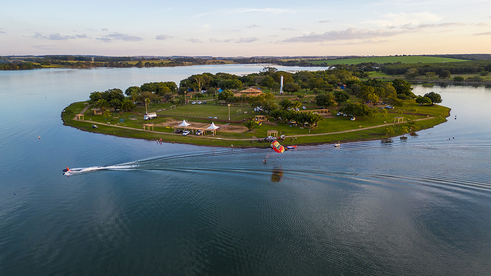
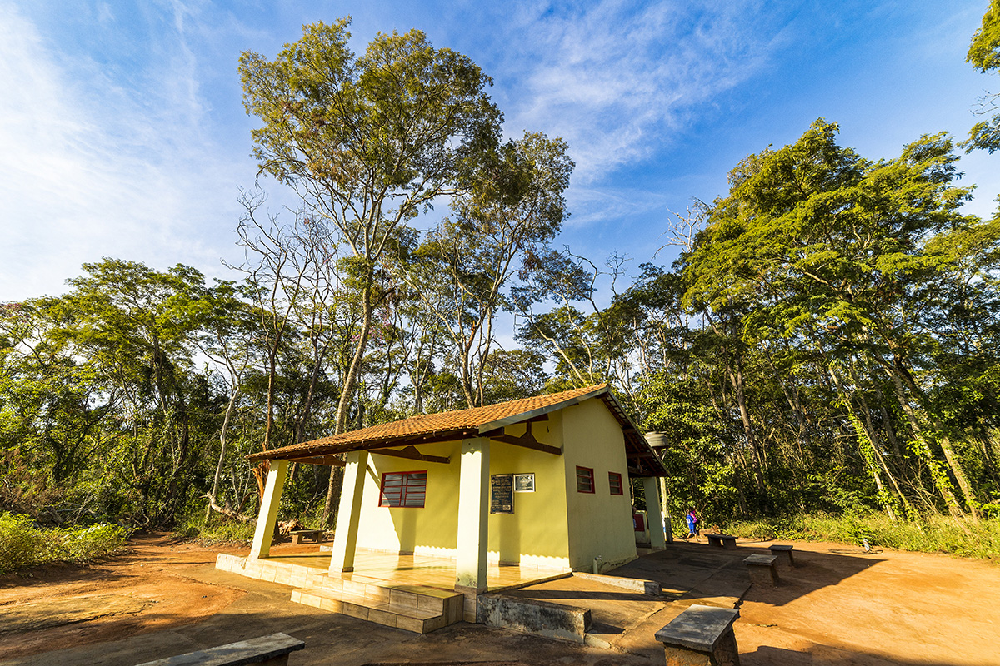
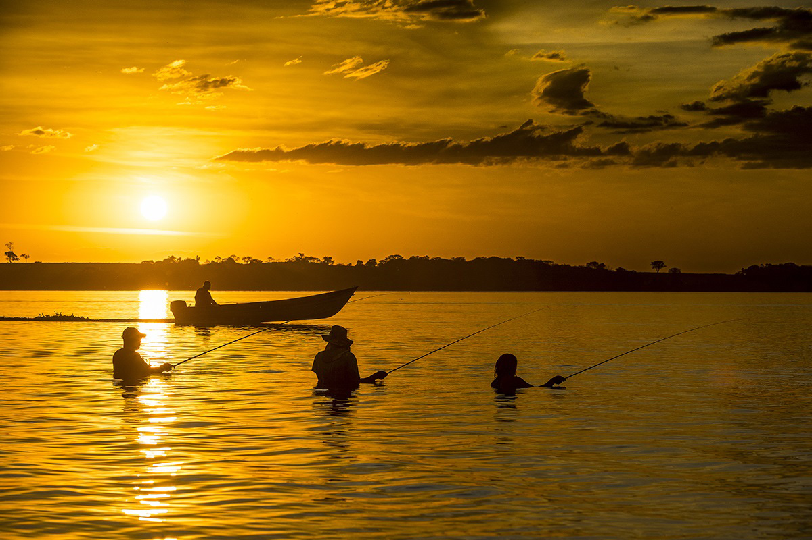

Origem e Emancipação
Localizada no noroeste do Estado de São Paulo, com aproximadamente 216,8 km2 de área, orgulha-se de ser reconhecida como um Município de Interesse Turístico. Este título ressalta as riquezas naturais e culturais do município, bem como seu compromisso em proporcionar experiências inesquecíveis aos seus visitantes. Entre os principais atrativos está deslumbrante Prainha Fluvial, um perfeito parafamílias que buscam lazer e descanso em meio à natureza.
Turismo
Algumas das principais atrações turísticas de Mira Estrela são:
Prainha Fluvial

Considerada como refúgio dos moradores da região, tem uma área de 7,2 hectares, possuindo 12 chalés com churrasqueiras, 32 quiosques, 03 conjuntos sanitários, lanchonete e restaurante, portaria com total segurança, zeladoria, poço semi-artesiano com água tratada e toda infraestrutura necessária para acolher o turista nas suas necessidades.
No período de férias escolares, o número de visitante gira em torno de 3.600 pessoas por semana, entre visitante/dia e aqueles que locam os chalés por temporada.
Trilha Ecológica

Denominada popularmente de “Mata dos Macacos”, é visitada por turistas e estudantes que promovem a educação ambiental e o turismo conservacionista.
A trilha está elencada nos catálogos de turistas ecológicos que procuram o local em busca de tranquilidade, material biológico para estudos ou passeio. Nesta mata também possui vegetação e fauna, além de uma imagem inesquecível para crianças e adultos. São bandos de macacos que integram a mata e que ficam se mostrando às margens da rodovia.
Pesca Esportiva

A região dispõe de vasta qualidade de peixes como: Tucunaré, Corvina, Mandi, Barbado, Pacú Guaçú, Pacú Caranha, Curimba, Piapara, Piau, entre outros. Tudo para o divertimento dos apaixonados por este esporte.
Na Prainha, o visitante tem a facilidade em adquirir petrechos para a prática da pesca esportiva, entre locação de barcos, motores, pirangueiros e píer para pesca desembarcado, tudo com segurança e dentro das normas estabelecidas em lei.
Localização
Veriifique, no mapa a seguir, a localização de Mira Estrela: